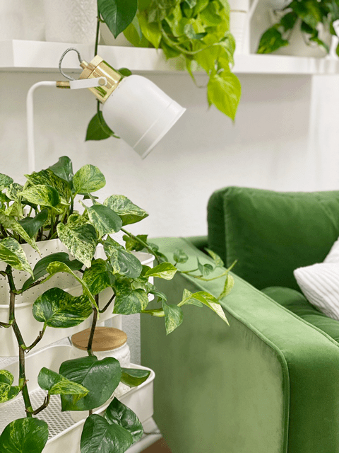
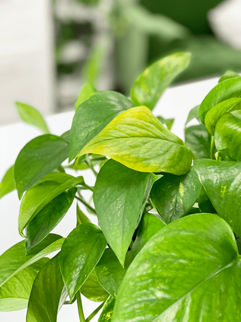

<!doctype html><html lang="en"><meta charset="utf-8"><meta name="viewport" content="width=device-width,initial-scale=1"><title>Houseplant Troubleshooting Archives</title><link rel="stylesheet" href="../reader.css"><header><a href="../START_HERE.html">← Каталог и поиск</a> · <a href="https://nouveauraw.com/indoor-plants/houseplant-troubleshooting/">Оригинал</a> · Личная копия, 10.09.2026 · © Amie Sue</header><main><div id="post-208293" class="post-208293 post type-post status-publish format-standard has-post-thumbnail hentry category-houseplant-troubleshooting tag-houseplant-troubleshooting" data-source-url="https://nouveauraw.com/house-plants/houseplant-troubleshooting/">

  

<div class="grid_1">

	<div class="image-wrap fader">
    <span class="category"><a href="indoor-plants-houseplant-troubleshooting-master-list-of-houseplant-troubleshooting-3d324c0ec4.html"> </a> </span> 
        <!-- removed title overlay -->
	<a href="indoor-plants-houseplant-troubleshooting-master-list-of-houseplant-troubleshooting-3d324c0ec4.html" title="go to Master List of Houseplant Troubleshooting"><span></span></a>
	</div>
         <!-- title below thumbnail -->
<div class="nr_title"><a href="indoor-plants-houseplant-troubleshooting-master-list-of-houseplant-troubleshooting-3d324c0ec4.html" title="go to Master List of Houseplant Troubleshooting">Master List of Houseplant Troubleshooting</a></div>

		
	
</div><!-- .grid -->


  

<div class="grid_1">

	<div class="image-wrap fader">
    <span class="category"><a href="indoor-plants-houseplant-troubleshooting-pothos-plant-my-leaves-are-turning-yellow-0bce7e4c19.html"> </a> </span> 
        <!-- removed title overlay -->
	<a href="indoor-plants-houseplant-troubleshooting-pothos-plant-my-leaves-are-turning-yellow-0bce7e4c19.html" title="go to Pothos Plant | My Leaves are Turning Yellow?!"><span></span></a>
	</div>
         <!-- title below thumbnail -->
<div class="nr_title"><a href="indoor-plants-houseplant-troubleshooting-pothos-plant-my-leaves-are-turning-yellow-0bce7e4c19.html" title="go to Pothos Plant | My Leaves are Turning Yellow?!">Pothos Plant | My Leaves are Turning Yellow?!</a></div>

		
	
</div><!-- .grid -->


	<div class="nav-interior clearfix">
			<div class="prev"></div>
			<div class="next"></div>
	</div>

	
</div></main></html>